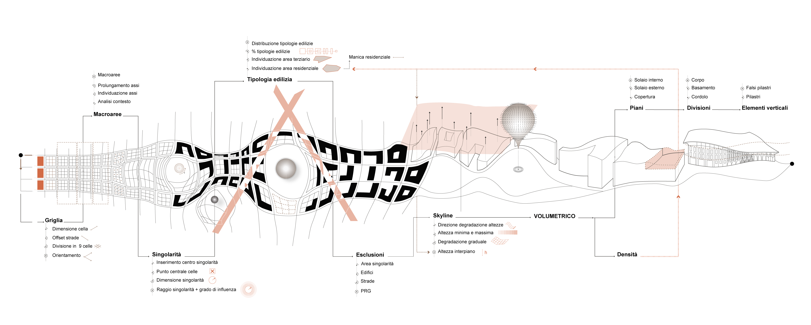

TRACK POINT
Quale città ti immagini?
Immagina una città omogenea, concepita come un organismo unico e vibrante.
Il progetto Track Point associa la metodologia di progettazione parametrica al contesto urbano di Torino, specificamente nell'area di Scalo Vanchiglia, caratterizzata da una ricca varietà e complessità urbana.
Track Point, come suggerisce il nome, nasce da due elementi geometrici basilari, la linea e il punto , che generano una griglia rigida deformata e distrutta dalle singolarità , creando una nuova concezione di spazio urbano.
Il processo si basa sulla morfogenesi di una porzione di città attraverso la variazione e deformazione dei tipi urbani tramite metodi e strumenti di disegno avanzati, come la programmazione visuale (VPL) e il Building Information Modeling (BIM). Il risultato non è una verità assoluta, ma un modello formato da regole e linee guida derivanti dall’analisi del contesto.
Con il termine "singolarità" ci si riferisce a un'architettura distintiva all'interno dello spazio urbano, che funge da landmark e "incubatore sociale". Questi elementi generano una rottura a livello urbano, deformando la griglia e caratterizzando i lotti all'interno dell'area. Le singolarità spaziali variano per forma, posizione e ruolo urbano, influenzate dal contesto e dalle condizioni esterne.


